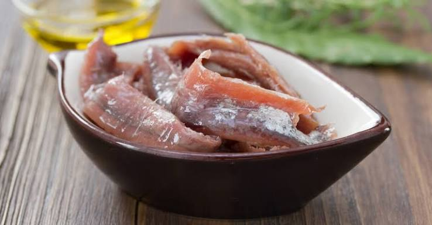

Anchois
de Collioure


⟹ Plats Emblématiques ⟸
L'histoire de l'Anchois de Collioure est indissociable de celle du port, du sel et des échanges méditerranéens. La transformation de l'anchois par salaison y est ancienne : les documents de reconnaissance de l'Indication Géographique Protégée rattachent le produit à un savoir-faire local transmis sur plusieurs siècles. La situation de Collioure, port naturel de la Côte Vermeille au contact de routes maritimes et d'un arrière-pays producteur, a favorisé très tôt les activités de pêche, de conservation et de commerce du poisson.
Avant l'ère du froid industriel, le sel était indispensable pour conserver un poisson aussi fragile que l'anchois. Étêté, éviscéré puis rangé avec du sel, il pouvait maturer et voyager bien au-delà du lieu de pêche. Cette maîtrise de la salaison a progressivement donné naissance à un métier spécialisé. À Collioure, la réputation du poisson salé est attestée à l'époque moderne et s'inscrit dans l'économie maritime de la ville, aux côtés de la pêche et de la viticulture.

La tradition locale associe également l'essor de cette activité aux privilèges accordés sur le sel. Les récits historiques mentionnent des exemptions de gabelle destinées à soutenir les salaisons ; les sources secondaires divergent toutefois sur la date exacte et le souverain auquel rattacher certains privilèges. Il est donc plus prudent de retenir le fait essentiel : dans une économie où le sel était lourdement taxé, les facilités fiscales ont constitué un enjeu majeur pour les pêcheurs et saleurs de Collioure.
Aux XVIIIe et XIXe siècles, la pêche catalane se développe avec ses barques caractéristiques et, plus tard, des techniques nocturnes utilisant la lumière pour concentrer les bancs de petits pélagiques. Autour du poisson prospère tout un monde artisanal : ateliers de salaison, manutentionnaires, tonneliers et commerçants. Les femmes jouent traditionnellement un rôle essentiel dans les ateliers, où la préparation, le nettoyage et le filetage demandent rapidité, précision et expérience.
Le XXe siècle bouleverse cet équilibre. Modernisation de la pêche, évolution des circuits commerciaux, concurrence de productions moins coûteuses et fluctuations de la ressource réduisent progressivement le nombre d'entreprises locales. La continuité du produit repose alors moins sur l'origine immédiate de chaque poisson que sur le savoir-faire de transformation effectué dans l'aire de Collioure selon des règles précises : salage, maturation, préparation et présentation.
Cette spécificité a conduit à une protection européenne. L'« Anchois de Collioure » est enregistré en Indication Géographique Protégée depuis 2004 ; l'INAO publie un cahier des charges consolidé daté du 25 juin 2004. La dénomination couvre l'anchois européen Engraulis encrasicolus et encadre les formes traditionnelles commercialisées, notamment les anchois au sel et les filets préparés en saumure ou à l'huile. L'IGP protège ainsi un lien entre une réputation géographique et un savoir-faire de transformation.
À Collioure, le patrimoine de l'anchois réside autant dans la maturation et le geste des saleurs que dans l'histoire de la pêche elle-même.
Héritage des ateliers de salaison de la Côte VermeilleAujourd'hui, l'anchois demeure un marqueur puissant de l'identité de Collioure. Les maisons de salaison encore actives perpétuent les gestes manuels tout en travaillant dans un cadre sanitaire et réglementaire contemporain. Ce passage d'une activité portuaire de grande ampleur à un artisanat patrimonial protégé résume plusieurs siècles d'histoire locale : celle d'un petit poisson devenu, grâce au sel, au temps et au savoir-faire humain, l'un des emblèmes gastronomiques du Roussillon.
Anchois au sel entier : la présentation la plus ancienne, à dessaler et fileter soi-même au moment de la dégustation.
Filets en saumure : prêts à l'emploi, ils conservent une texture ferme et un goût prononcé, parfaits pour la cuisine.
Filets à l'huile d'olive : plus doux, ils se dégustent directement sur une tranche de pain grillé ou dans une salade.
Boquerones : de l'autre côté des Albères, en Catalogne espagnole, les anchois sont souvent marinés au vinaigre plutôt que salés en longue durée.
C'est à Collioure même que la tradition perdure le mieux, dans les deux dernières maisons artisanales du village.
Maison Roque propose des visites gratuites de son atelier en semaine, avec démonstration du salage et dégustation.
Maison Desclaux participe chaque année aux Journées européennes du Patrimoine, avec démonstrations de salaison ouvertes au public.
Marchés de Perpignan et de Collioure où l'on trouve l'anchoïade, sauce catalane à base d'anchois pilés, servie en tapas sur tartines grillées.